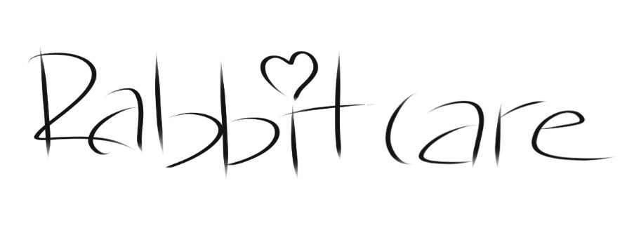
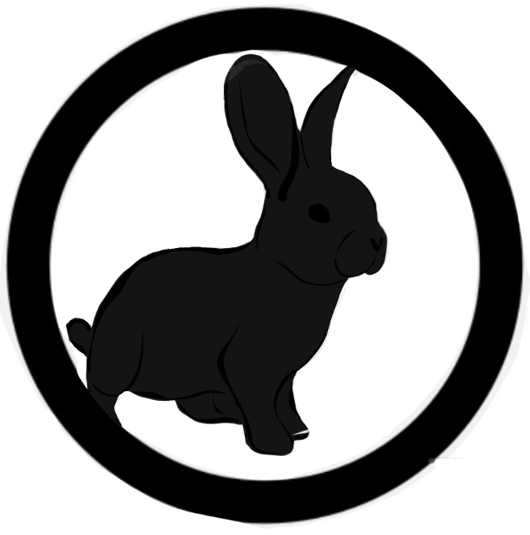

For preface, this is a Girl Scout silver award project. All of the information here was found through research and triple-checking our facts. Everything you learn here should help you with taking care of/adopting a bunny.
This website is a great source for learning about adopting, housing, and taking care of bunnies. More specific information about bunnies is available (at the top of this page) to find out about:
|